Guía de Instalación de Correo Electrónico
Vamos a instalar iRedMail en un servidor de tipo Linux, específicamente en Ubuntu Server.
Configuración Inicial del Servidor
- Cambia la tarjeta de red a modo puente.
- Ingresa al modo root:
sudo su - Actualiza el servidor:
apt-get update
apt-get upgrade
Descargar e Instalar iRedMail
- Descarga iRedMail desde https://www.iredmail.org/. Selecciona la versión STABLE y copia la dirección del enlace de descarga:
wget https://github.com/iredmail/iRedMail/archive/refs/tags/1.6.8.tar.gz - Descomprime el archivo descargado:
tar -xzvf 1.6.8.tar.gz - Cambia los permisos:
chmod 777 -R iRedMail-1.6.8/ - Configura el nombre del dominio:
Asegúrate de que exista la siguiente línea o modifícala:
nano /etc/hostsNota: “server” es el nombre de tu máquina.127.0.1.1 correo.midominio.com server localhost - Ejecuta iRedMail:
cd iRedMail-1.6.8/
bash iRedMail.sh
Configuración de iRedMail
- Confirma con "yes" y sigue las instrucciones en pantalla. Mantén las opciones por defecto y selecciona "Next" en cada paso.
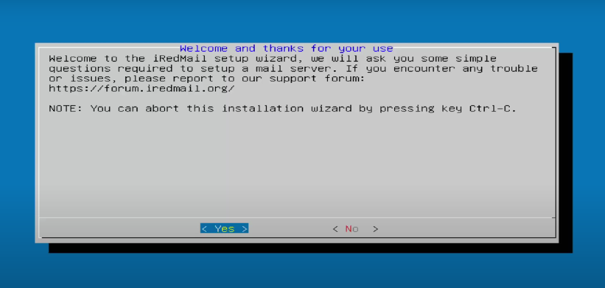 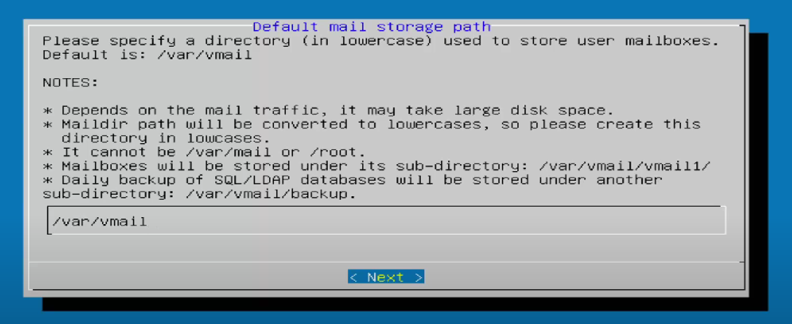
- Selecciona Nginx como servidor de correo y "Next".
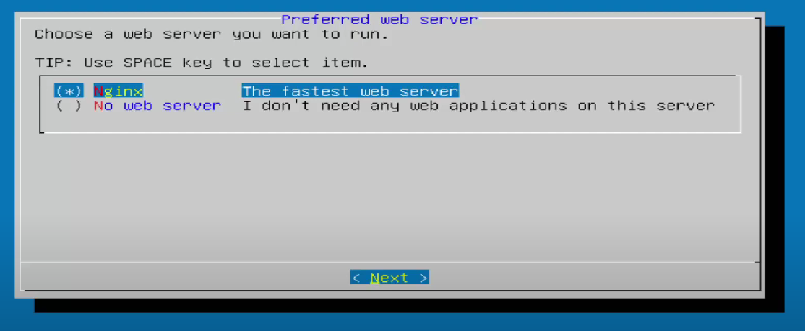
- Selecciona MariaDB como base de datos y "Next".
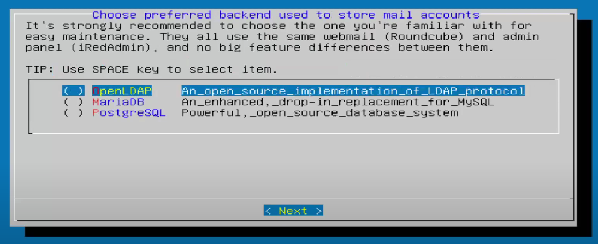
- Especifica la contraseña para la raíz del administrador de MySQL y "Next".
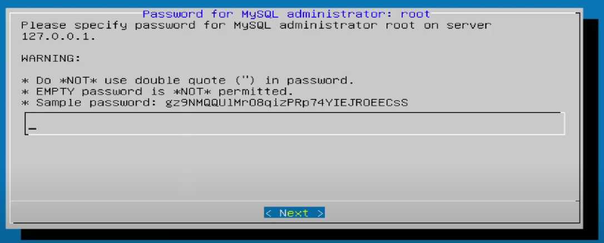
- Especifica el nombre de dominio de correo:
midominio.comy "Next".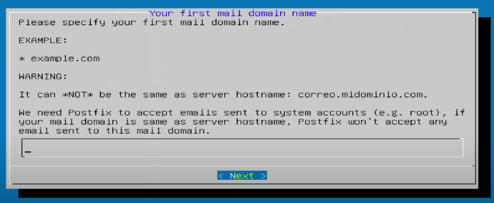 - Especifica la contraseña para el administrador del dominio de correo y "Next".
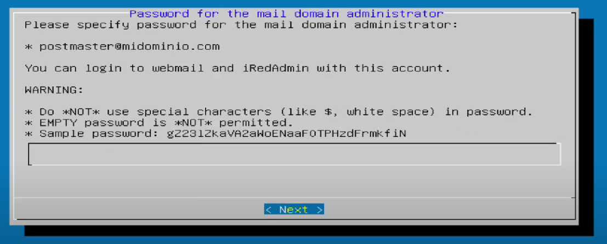
- Confirma con "y" para proceder con la instalación.
Reiniciar la VM
- Revisa la dirección IP dentro de la red con:
ifconfig - Ingresa la dirección IP en el navegador de tu máquina física:
Nota: Recuerda que es la ip de tu máquina.
http://192.168.0.14/iredadmin - Inicia sesión con:
- Usuario:
postmaster@midominio.com(la configurada durante la instalación) - Contraseña: (la configurada durante la instalación)
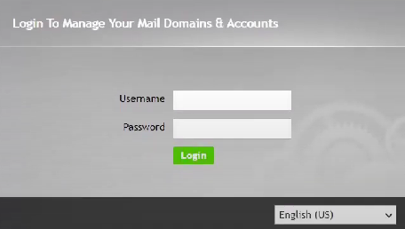 - Usuario:
Crear Usuarios
- Registra un par de usuarios para que se comuniquen entre ellos.
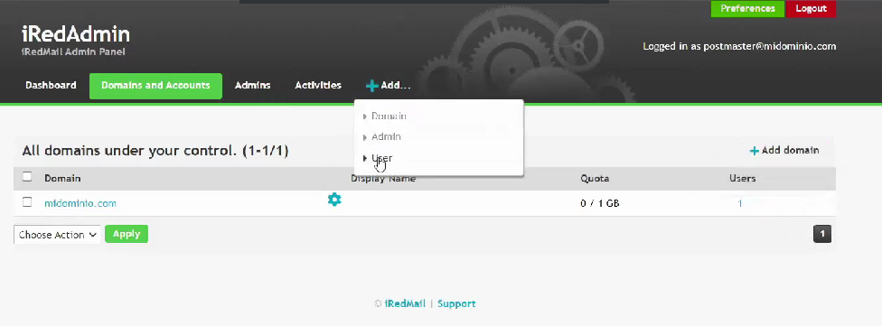 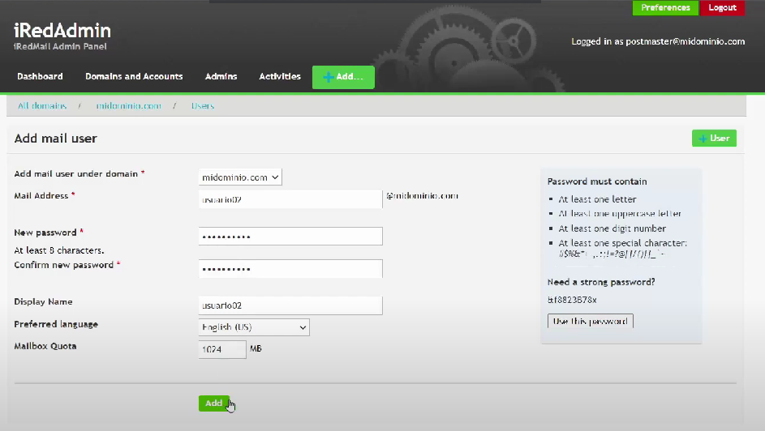Nota: Repite el proceso de registro de usuario.
- Confirma que se hayan creado correctamente dirigiéndote a dominios y cuentas.
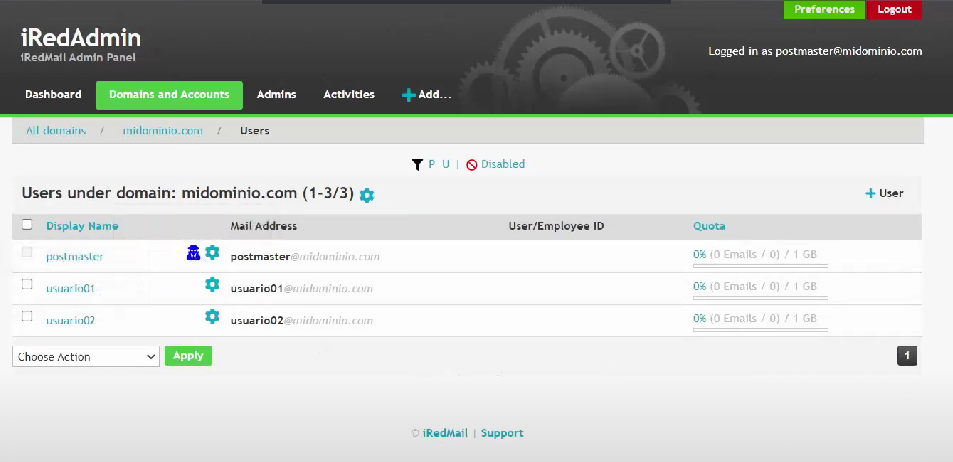
Correo de Prueba
- Accede al enlace:
http://192.168.0.14/mail/ - Inicia sesión con los datos de los usuarios creados y envía un correo de prueba de un usuario a otro.
- Confirma que el correo haya llegado exitosamente.
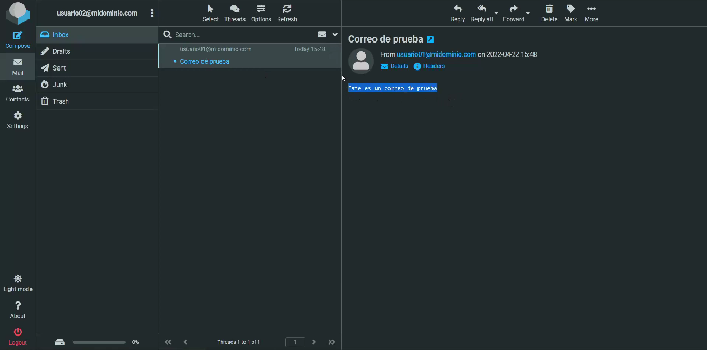
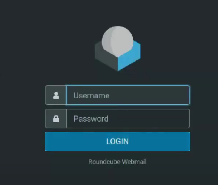
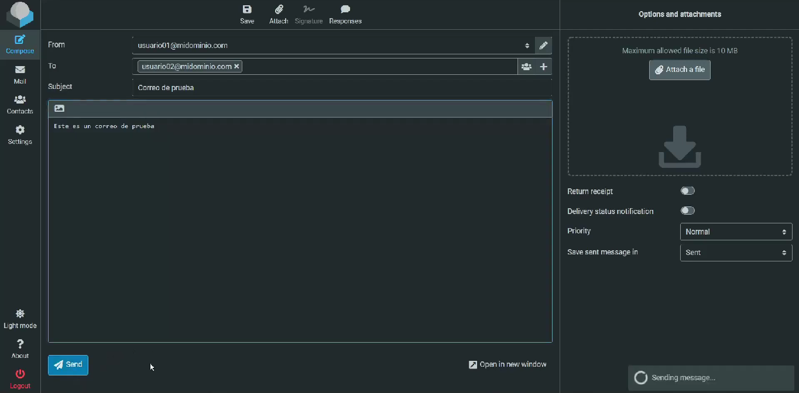
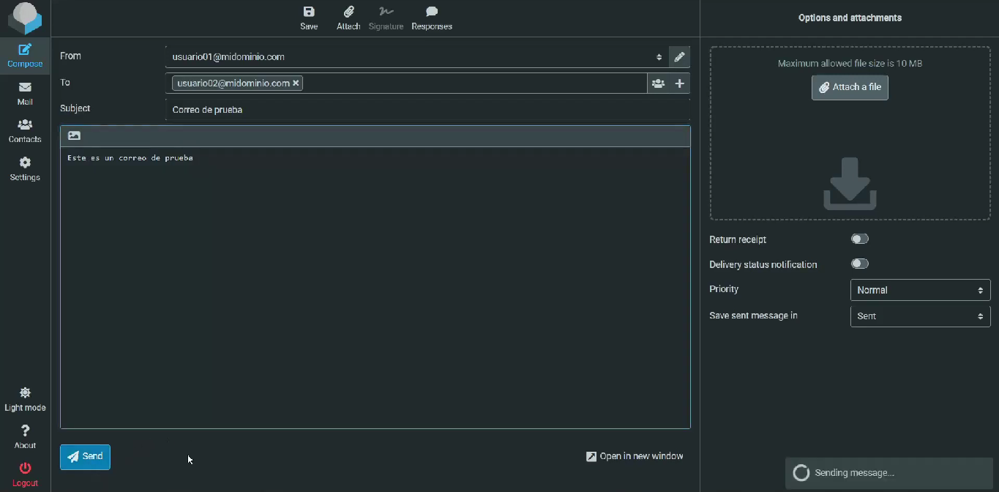